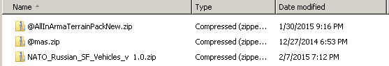
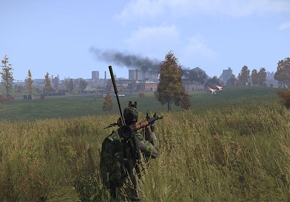
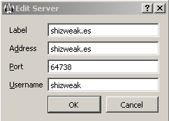
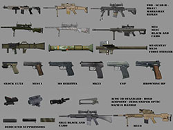
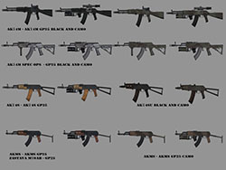
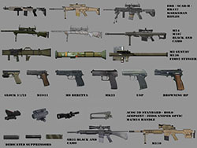
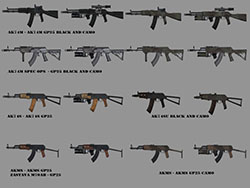

Installation
Download the mods using the links above, you should end up with 3 zip files like so:

Extract them into separate folders inside your mods folder, or even just your A3 directory like so:

The easiest way to load mods, is to use the launcher provided by Arma III, you should be able select this when launching Arma III from Steam. Once opened, add each mod to the launcher using the add folder button in the bottom right - like so:

If you have done as instructed, you should be able to find the shizweak server in the browser, or direct connect to 203.33.121.111:2302 - you should then be in game blowing shit up like so:

If you have any troubles, please join our mumble server for some assistance, otherwise jump on and team up with some of the regulars. You can download mumble here and connect to shizweak.es on the default port, e.g.


 


